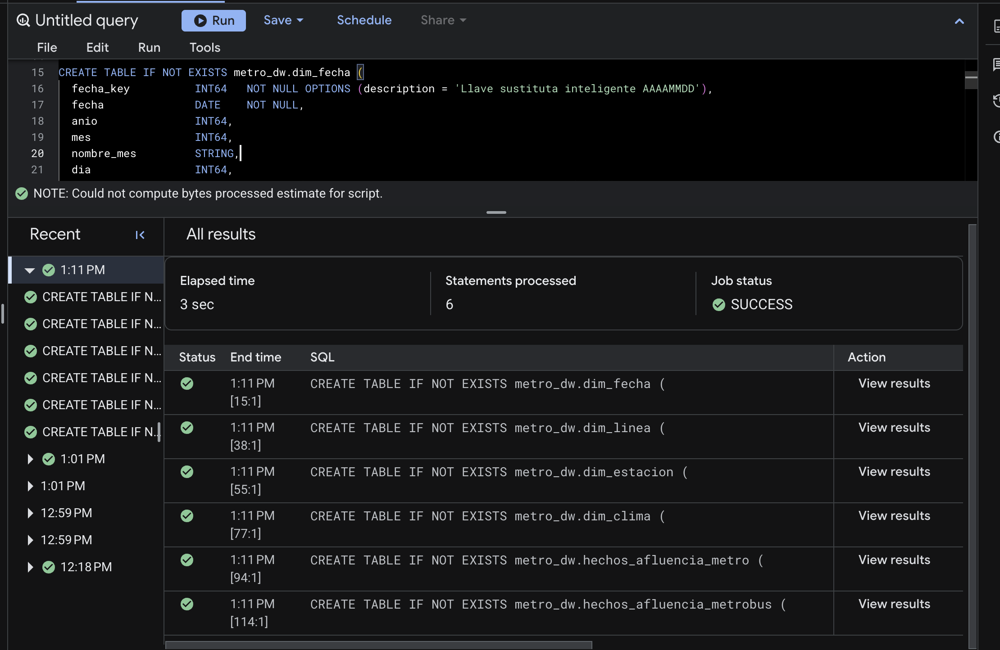
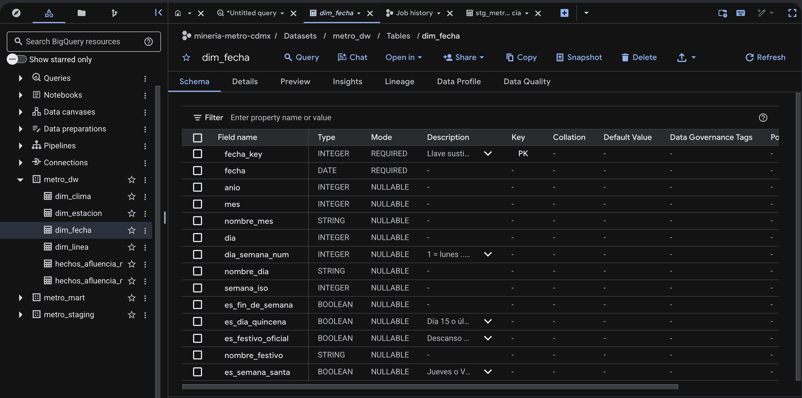
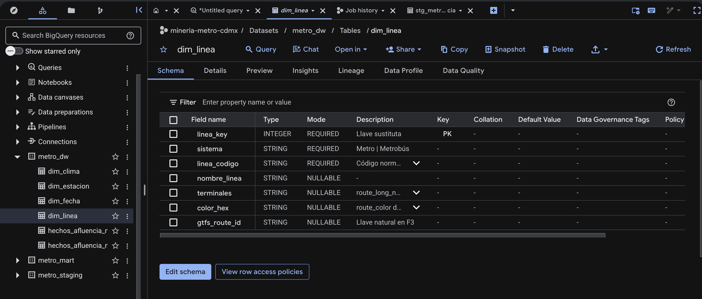
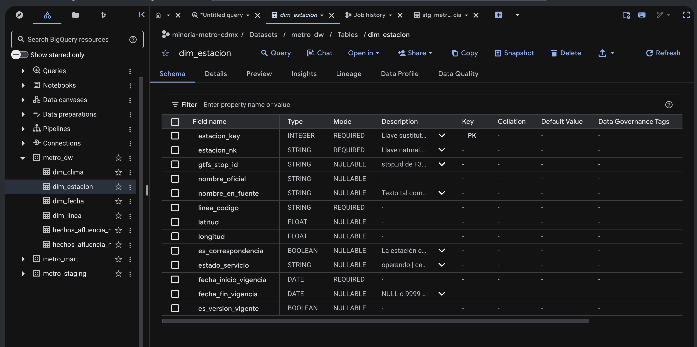
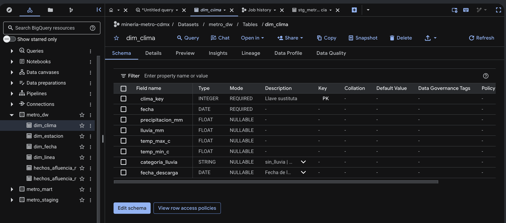
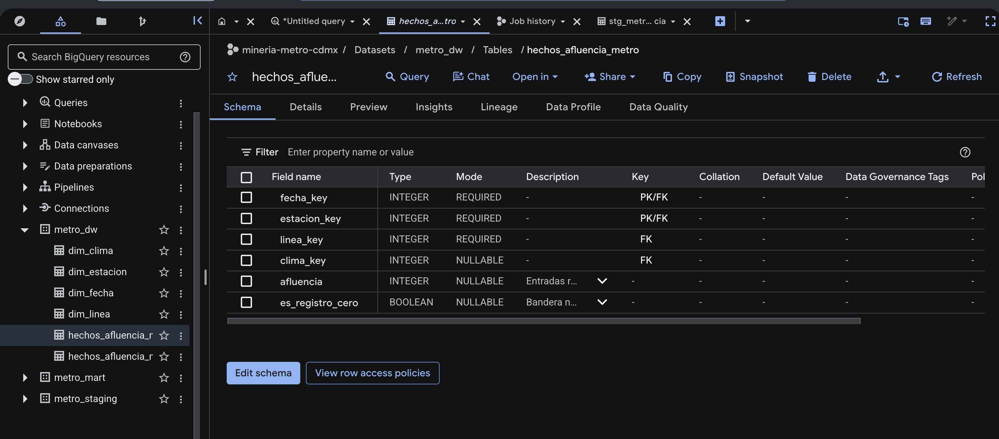
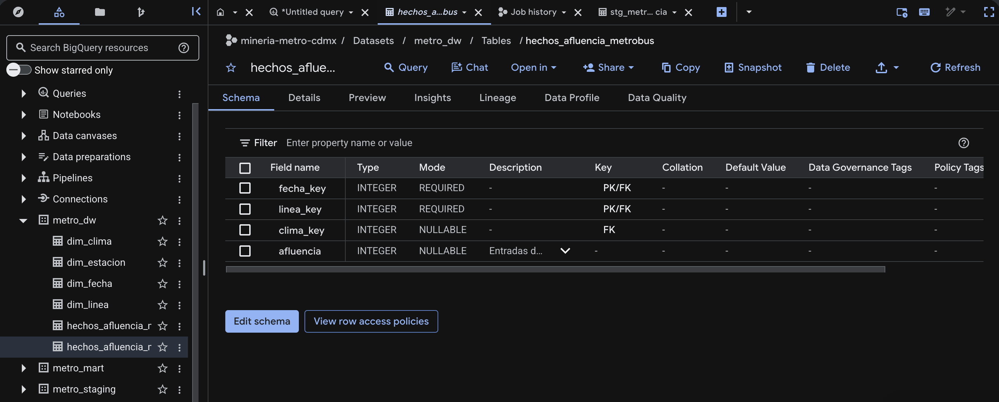

erDiagram
DIM_FECHA ||--o{ HECHOS_AFLUENCIA_METRO : fecha_key
DIM_ESTACION ||--o{ HECHOS_AFLUENCIA_METRO : estacion_key
DIM_LINEA ||--o{ HECHOS_AFLUENCIA_METRO : linea_key
DIM_CLIMA ||--o{ HECHOS_AFLUENCIA_METRO : clima_key
DIM_FECHA ||--o{ HECHOS_AFLUENCIA_METROBUS : fecha_key
DIM_LINEA ||--o{ HECHOS_AFLUENCIA_METROBUS : linea_key
DIM_CLIMA ||--o{ HECHOS_AFLUENCIA_METROBUS : clima_key
HECHOS_AFLUENCIA_METRO {
INT64 fecha_key FK
INT64 estacion_key FK
INT64 linea_key FK
INT64 clima_key FK
INT64 afluencia "aditiva"
BOOL es_registro_cero "no aditiva"
}
HECHOS_AFLUENCIA_METROBUS {
INT64 fecha_key FK
INT64 linea_key FK
INT64 clima_key FK
INT64 afluencia "aditiva, NULL si NaN"
}
DIM_FECHA {
INT64 fecha_key PK "AAAAMMDD, SCD 0"
DATE fecha
INT64 anio
INT64 mes
INT64 dia_semana_num
BOOL es_dia_quincena
BOOL es_festivo_oficial
BOOL es_semana_santa
}
DIM_LINEA {
INT64 linea_key PK "SCD 1"
STRING sistema "Metro o Metrobus"
STRING linea_codigo
STRING nombre_linea
STRING color_hex
STRING gtfs_route_id
}
DIM_ESTACION {
INT64 estacion_key PK "SCD 2"
STRING estacion_nk
STRING gtfs_stop_id
STRING nombre_oficial
STRING linea_codigo
FLOAT64 latitud
FLOAT64 longitud
STRING estado_servicio
DATE fecha_inicio_vigencia
DATE fecha_fin_vigencia
}
DIM_CLIMA {
INT64 clima_key PK "SCD 1"
DATE fecha
FLOAT64 precipitacion_mm
FLOAT64 temp_max_c
STRING categoria_lluvia
}
3. Esquema estrella
Entrega E1 - Arquitectura del Data Warehouse
3.1 Granos candidatos
Los granos se listan a partir de lo que las fuentes realmente publican, revisado en la sección 1.4, no a partir de lo que imaginábamos en E0.
| Grano candidato | Lo sustenta | Preguntas que permite | Preguntas que pierde |
|---|---|---|---|
| G1 · estación-línea × día | F1: 195 filas por día, 2010–2026 | P1, P2, P3, P4 completas; P5 al agregar a línea | Ninguna de E0 (la hora ya se había descartado en E0, riesgo R1) |
| G2 · estación-línea × día × tipo de pago | Metro desglosada (C6): solo desde 2021 | Las mismas que G1, con menos historia | Ninguna pregunta usa el medio de pago: dim_tipo_pago sería huérfana |
| G3 · línea × día | Común denominador de F1 y F2 | P5 | P1, P2, P3 y P4, que son por estación |
3.2 Grano elegido
Grano del hecho principal Una fila por estación-línea del Metro por día.
Grano del hecho secundario Una fila por línea de Metrobús por día.
Por qué G1. Es el grano más fino que existe en las fuentes y coincide exactamente con el objetivo de minería de E0: un pronóstico diario por estación con 24 h de antelación. Por eso no hace falta pivote.
Por qué un segundo hecho. Metrobús no publica afluencia por estación, solo por línea. Mezclar ambos sistemas en una sola tabla obligaría a bajar todo al grano G3 y a perder P1–P4. Con dos hechos que comparten dim_fecha, dim_linea y dim_clima conformadas, cada sistema conserva su grano nativo y P3 y P5 se responden cruzando por fecha y línea.
Qué ya no se puede responder, con honestidad:
- Nada a nivel de hora: no existe en ninguna fuente pública (riesgo R1 de E0, ya asumido).
- La alternativa de Metrobús por estación de P3: solo se puede proponer a nivel de línea (ver trazabilidad).
- La ocupación del vagón: la afluencia cuenta entradas, no ocupación (riesgo R4 de E0).
3.3 Tablas de hechos y medidas
| Hecho | Medida | Tipo | Aditividad |
|---|---|---|---|
hechos_afluencia_metro |
afluencia |
INT64 | Aditiva en todas las dimensiones: sumar entradas por estaciones, líneas o días da el total de entradas |
hechos_afluencia_metro |
es_registro_cero |
BOOL | No aditiva: bandera para filtrar ceros (cierres de un día) |
hechos_afluencia_metrobus |
afluencia |
INT64 | Aditiva; NULL cuando la fuente reporta 'NaN', porque la línea aún no existía |
Los promedios, índices contra la base y z-scores no se guardan en el hecho: se calculan en el DataMart, porque no son aditivos.
3.4 Dimensiones
| Dimensión | Llave sustituta | Atributos principales | SCD | Por qué ese tipo |
|---|---|---|---|---|
dim_fecha |
fecha_key (INT64 AAAAMMDD) |
fecha, año, mes, día de la semana, semana ISO, fin de semana, quincena, festivo oficial, Semana Santa | Tipo 0 | Los atributos de un día del calendario no cambian. Los festivos se validan una vez contra la LFT al cargar |
dim_linea |
linea_key |
sistema (Metro / Metrobús), código, nombre, terminales, color, gtfs_route_id |
Tipo 1 | Un cambio de color o de nombre de terminal es una corrección; ninguna pregunta necesita su historia, así que se sobrescribe |
dim_estacion |
estacion_key (una por versión) |
llave natural, gtfs_stop_id, nombre oficial, nombre en la fuente, línea, coordenadas, correspondencia, estado de servicio, vigencia |
Tipo 2 en estado_servicio; tipo 1 en el nombre |
Los periodos sin servicio son cambios reales que necesitan historia: L12 cerrada desde 2021-05-04 con reapertura parcial en 2023 y total en 2024, L1 en obra de 2022 a 2025 y L12 antes de su inauguración en 2012. Cada periodo es una versión con fechas de vigencia: P2 excluye tramos cerrados, P4 explica anomalías por cierre y P5 compara antes, durante y después. El nombre se sobrescribe (tipo 1) porque F1 reescribe hacia atrás el nombre vigente: Zócalo/Tenochtitlan aparece desde 2010, así que la fuente no permite reconstruir su historia |
dim_clima |
clima_key |
fecha, precipitación, lluvia, temperatura máxima y mínima, categoría de lluvia, fecha de descarga | Tipo 1 | Open-Meteo es un reanálisis y puede corregir días recientes. Se sobrescribe con la descarga más nueva, registrando su fecha |
dim_linea, dim_fecha y dim_clima son dimensiones conformadas: las usan los dos hechos con el mismo significado.
3.5 Diagrama
3.6 DDL ejecutado en BigQuery
El código completo está en sql/ddl_dw.sql. Las tablas quedan vacías: poblarlas es trabajo de E2.
-- =====================================================================
-- E1 · Paso 4: DDL del esquema estrella en la capa DW (metro_dw).
-- Dos tablas de hechos con dimensiones conformadas:
-- hechos_afluencia_metro -> una fila por estación-línea por día
-- hechos_afluencia_metrobus -> una fila por línea de Metrobús por día
-- Las tablas se crean VACÍAS: poblarlas es trabajo de E2.
-- BigQuery no impone las llaves (NOT ENFORCED); se declaran para
-- documentar el diseño. Ejecutar completo, en este orden.
-- =====================================================================
-- ---------------------------------------------------------------------
-- dim_fecha · SCD tipo 0 (calendario fijo)
-- Fuentes: F1 (rango de fechas) + F4 (festivos, validados contra LFT art. 74)
-- ---------------------------------------------------------------------
CREATE TABLE IF NOT EXISTS metro_dw.dim_fecha (
fecha_key INT64 NOT NULL OPTIONS (description = 'Llave sustituta inteligente AAAAMMDD'),
fecha DATE NOT NULL,
anio INT64,
mes INT64,
nombre_mes STRING,
dia INT64,
dia_semana_num INT64 OPTIONS (description = '1 = lunes ... 7 = domingo (ISO)'),
nombre_dia STRING,
semana_iso INT64,
es_fin_de_semana BOOL,
es_dia_quincena BOOL OPTIONS (description = 'Día 15 o último día del mes'),
es_festivo_oficial BOOL OPTIONS (description = 'Descanso obligatorio LFT art. 74'),
nombre_festivo STRING,
es_semana_santa BOOL OPTIONS (description = 'Jueves o Viernes Santo (F4, tipo School/Bank)'),
PRIMARY KEY (fecha_key) NOT ENFORCED
)
OPTIONS (description = 'Dimensión de tiempo diaria, conformada. Responde: P1, P2, P3, P4, P5');
-- ---------------------------------------------------------------------
-- dim_linea · SCD tipo 1 (se sobrescribe: color y terminales sin historia)
-- Conformada entre Metro y Metrobús. Fuentes: F1, F2, F3 (routes.txt)
-- ---------------------------------------------------------------------
CREATE TABLE IF NOT EXISTS metro_dw.dim_linea (
linea_key INT64 NOT NULL OPTIONS (description = 'Llave sustituta'),
sistema STRING NOT NULL OPTIONS (description = 'Metro | Metrobús'),
linea_codigo STRING NOT NULL OPTIONS (description = 'Código normalizado: 1..12, A, B (Metro); 1..7 (Metrobús)'),
nombre_linea STRING,
terminales STRING OPTIONS (description = 'route_long_name de GTFS'),
color_hex STRING OPTIONS (description = 'route_color de GTFS'),
gtfs_route_id STRING OPTIONS (description = 'Llave natural en F3'),
PRIMARY KEY (linea_key) NOT ENFORCED
)
OPTIONS (description = 'Líneas de Metro y Metrobús (conformada). Responde: P1, P3, P5');
-- ---------------------------------------------------------------------
-- dim_estacion · SCD tipo 2 en estado_servicio (periodos de cierre);
-- el nombre se sobrescribe (tipo 1): F1 no conserva su historia
-- Una fila por estación-línea y versión. Fuentes: F1 (nombres), F3 (stops.txt)
-- ---------------------------------------------------------------------
CREATE TABLE IF NOT EXISTS metro_dw.dim_estacion (
estacion_key INT64 NOT NULL OPTIONS (description = 'Llave sustituta (una por versión)'),
estacion_nk STRING NOT NULL OPTIONS (description = 'Llave natural: linea_codigo + nombre normalizado'),
gtfs_stop_id STRING OPTIONS (description = 'stop_id de F3, p. ej. B_0200L1-PANTITLAN'),
nombre_oficial STRING,
nombre_en_fuente STRING OPTIONS (description = 'Texto tal como aparece en F1, para trazabilidad'),
linea_codigo STRING NOT NULL,
latitud FLOAT64,
longitud FLOAT64,
es_correspondencia BOOL OPTIONS (description = 'La estación existe en más de una línea'),
estado_servicio STRING OPTIONS (description = 'operando | cerrada_obra | cerrada_incidente | no_inaugurada'),
fecha_inicio_vigencia DATE NOT NULL,
fecha_fin_vigencia DATE OPTIONS (description = 'NULL o 9999-12-31 para la versión vigente'),
es_version_vigente BOOL,
PRIMARY KEY (estacion_key) NOT ENFORCED
)
OPTIONS (description = 'Estaciones del Metro por línea, con historia. Responde: P1, P2, P3, P4, P5');
-- ---------------------------------------------------------------------
-- dim_clima · SCD tipo 1 (se sobrescribe si la fuente reprocesa el día)
-- Un registro por día para la ciudad. Fuente: F5
-- ---------------------------------------------------------------------
CREATE TABLE IF NOT EXISTS metro_dw.dim_clima (
clima_key INT64 NOT NULL OPTIONS (description = 'Llave sustituta'),
fecha DATE NOT NULL,
precipitacion_mm FLOAT64,
lluvia_mm FLOAT64,
temp_max_c FLOAT64,
temp_min_c FLOAT64,
categoria_lluvia STRING OPTIONS (description = 'sin_lluvia | ligera | moderada | fuerte (umbrales a fijar en E2)'),
fecha_descarga DATE OPTIONS (description = 'Fecha de la descarga de F5 que originó el registro'),
PRIMARY KEY (clima_key) NOT ENFORCED
)
OPTIONS (description = 'Clima diario de la CDMX (un punto de malla). Responde: P2, P4');
-- ---------------------------------------------------------------------
-- HECHO 1 · Grano: una fila por estación-línea del Metro por día.
-- Fuente: F1. Medida aditiva: afluencia.
-- ---------------------------------------------------------------------
CREATE TABLE IF NOT EXISTS metro_dw.hechos_afluencia_metro (
fecha_key INT64 NOT NULL,
estacion_key INT64 NOT NULL,
linea_key INT64 NOT NULL,
clima_key INT64,
afluencia INT64 OPTIONS (description = 'Entradas registradas en el día. Aditiva en todas las dimensiones'),
es_registro_cero BOOL OPTIONS (description = 'Bandera no aditiva: la fuente reporta 0 (cierre o sin servicio)'),
PRIMARY KEY (fecha_key, estacion_key) NOT ENFORCED,
FOREIGN KEY (fecha_key) REFERENCES metro_dw.dim_fecha (fecha_key) NOT ENFORCED,
FOREIGN KEY (estacion_key) REFERENCES metro_dw.dim_estacion (estacion_key) NOT ENFORCED,
FOREIGN KEY (linea_key) REFERENCES metro_dw.dim_linea (linea_key) NOT ENFORCED,
FOREIGN KEY (clima_key) REFERENCES metro_dw.dim_clima (clima_key) NOT ENFORCED
)
CLUSTER BY estacion_key, fecha_key
OPTIONS (description = 'Grano: una fila por estación-línea del Metro por día. Responde: P1, P2, P3, P4, P5');
-- ---------------------------------------------------------------------
-- HECHO 2 · Grano: una fila por línea de Metrobús por día.
-- Fuente: F2. Medida aditiva: afluencia (NULL cuando la fuente dice 'NaN').
-- ---------------------------------------------------------------------
CREATE TABLE IF NOT EXISTS metro_dw.hechos_afluencia_metrobus (
fecha_key INT64 NOT NULL,
linea_key INT64 NOT NULL,
clima_key INT64,
afluencia INT64 OPTIONS (description = 'Entradas del día en la línea. Aditiva; NULL antes de la inauguración'),
PRIMARY KEY (fecha_key, linea_key) NOT ENFORCED,
FOREIGN KEY (fecha_key) REFERENCES metro_dw.dim_fecha (fecha_key) NOT ENFORCED,
FOREIGN KEY (linea_key) REFERENCES metro_dw.dim_linea (linea_key) NOT ENFORCED,
FOREIGN KEY (clima_key) REFERENCES metro_dw.dim_clima (clima_key) NOT ENFORCED
)
CLUSTER BY linea_key, fecha_key
OPTIONS (description = 'Grano: una fila por línea de Metrobús por día. Responde: P3, P5');Ejecución en BigQuery

ddl_dw.sql ejecutado: 6 sentencias, estado SUCCESSEsquema de cada tabla en BigQuery
La columna Key muestra las llaves declaradas (PK, FK, y PK/FK en las llaves compuestas de los hechos), y Description muestra los textos del DDL. Ambas coinciden con el diagrama de la sección 3.5.





